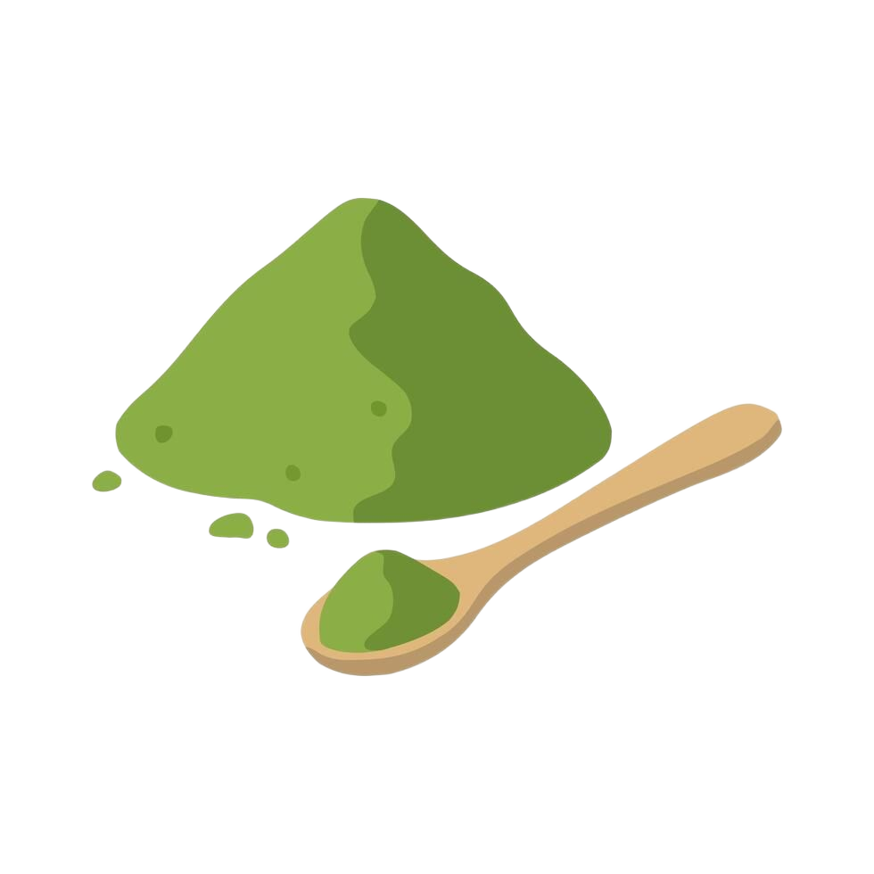
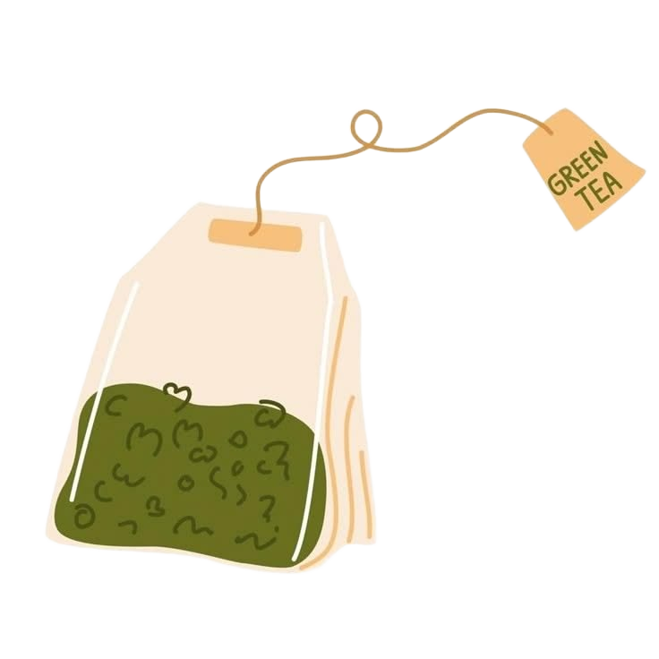

מה ההבדלים בין מאצ'ה לתה ירוק?
על המדף הם אולי נראים קרובי משפחה, אבל מבחינת טעם, מרקם וחוויה – מדובר בעולמות אחרים לגמרי. למרות ששניהם מגיעים בדיוק מאותו צמח (Camellia sinensis), הדרך שבה הם גדלים, נטוחנים ונלגמים יוצרת חוויה שונה לחלוטין. הנה כל מה ששווה לדעת כדי לעשות סדר בבלגן הירוק:

Matcha
- גדלה בצל לפני הקטיף
- נטחנת לאבקה דקה במיוחד
- שותים את עלי התה עצמם
- מרקם סמיך וקטיפתי וטעם אומאמי

Green Tea
- בדרך כלל גדלה בשמש עד הקטיף
- העלים נשארים שלמים או חתוכים
- חולטים את העלים ומסננים אותם
- מרקם קליל וטעם עשבוני ועדין יותר
הידעת? סוד ההצללה
כ-20 עד 30 ימים לפני קציר עלי המאצ'ה,
מכסים את שיחי התה ברשתות הצללה מיוחדות!
היעדר שמש ישירה מאלץ את הצמח לייצר כמויות
אדירות של כלורופיל וחומצות אמינו.
זה בדיוק מה שמעניק למאצ'ה את הצבע הירוק
הזרחני המדהים שלה, ואת הטעם המתקתק והעמוק
(ה"אומאמי") שאין לאף תה ירוק רגיל.